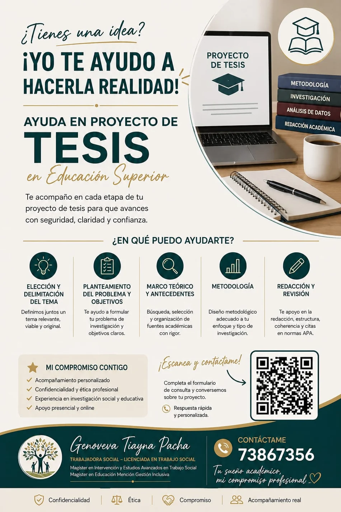

Área académica
Apoyo a Proyectos de Tesis
Acompañamiento personalizado para avanzar con seguridad, claridad y confianza en cada etapa del proyecto de educación superior.

¿En qué puedo ayudarte?
Del planteamiento inicial a la revisión final
El servicio entrega orientación académica y metodológica. El trabajo mantiene la autoría y responsabilidad del estudiante; no consiste en realizar la tesis en su nombre.